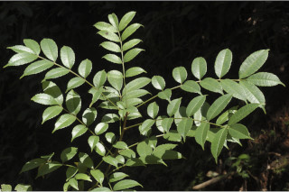
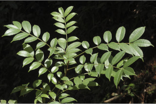
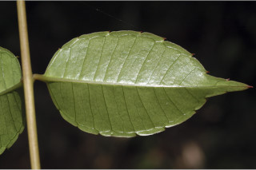
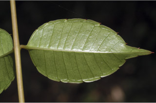
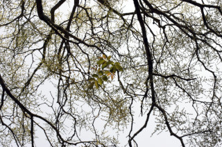
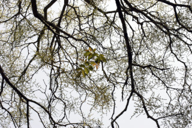
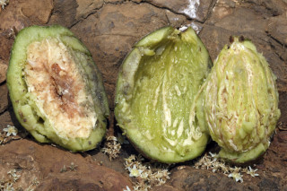
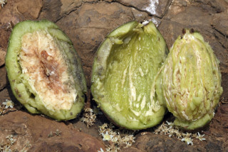

Tamil: Ambazham Malayalam: Ambazham Kannada: Ambatte mara, Amategayi gida, Gooddamate, Goddada kayi, Kadambatte, Kodalimavu, Marahunsie, Muthiga, Poondi, Vrykshamla, English: Indian Hog plum
Mangifera pinnata L.f.; Spondias mangifera Willd.
Prelim. Rep. For. & Veg. Pegu. App. A. 44 & B. 42. 1875; Keshava Murthy and Yoganarasimhan, Fl. Coorg (Kodagu) 126. 1990; Gamble, Fl. Madras 1: 259. 1997 (re. ed); Cook, Fl. Bombay 1: 281. 1902; Sasidharan, Biodiversity documentation for Kerala- Flowering Plants, part 6: 114. 2004; Saldanha, Fl. Karnataka 2: 209. 1996.
 

 

 



 
